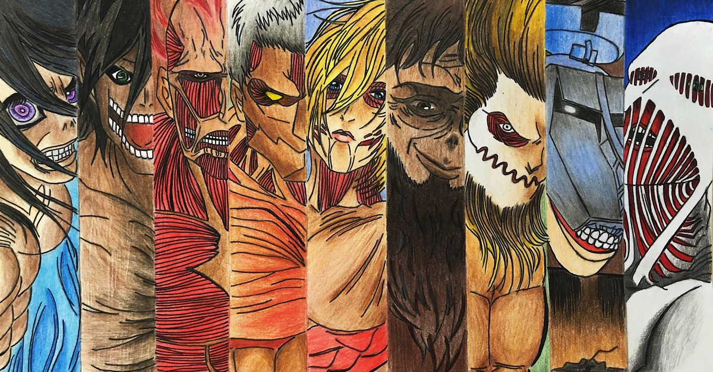
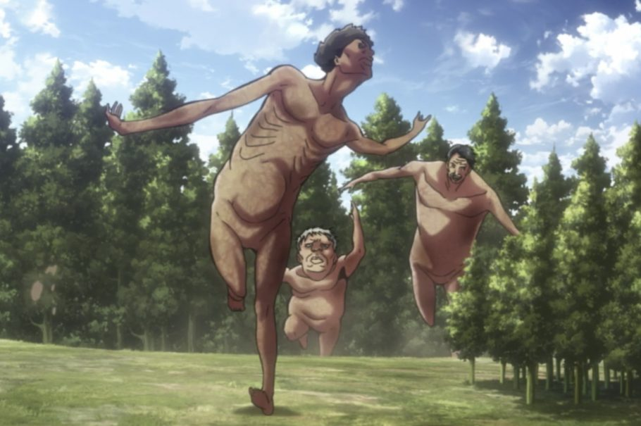
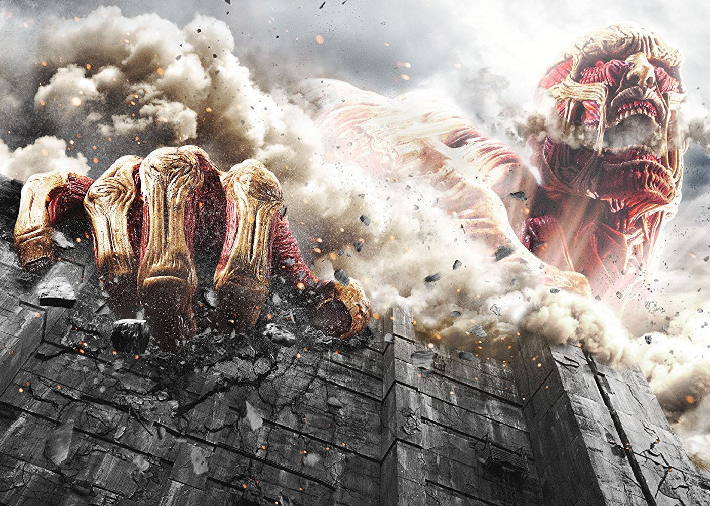
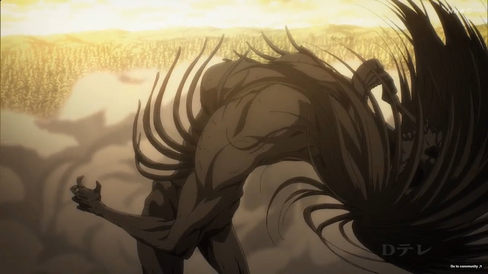
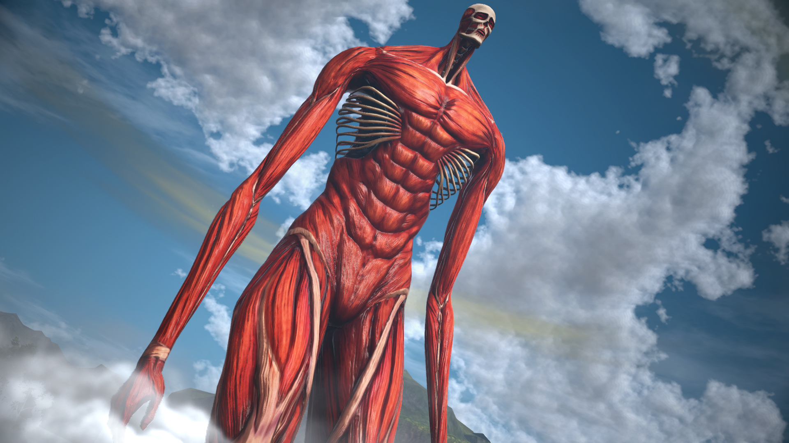

ATACK ON TITAN
Attack on Titan é uma adaptação em anime do mangá de Hajime Isayama, Shingeki no Kyojin. A história gira em torno de monstros gigantes chamados de titãs que devoram pessoas e fizeram com que três grandes muralhas fossem construídas para que os ataques aos sobreviventes cessasse. Acompanha o protagonista Eren Yeager e seus amigos Mikasa e Armin desde o rompimento da Muralha Rose, onde eles moravam. Durante a invasão titã, Eren perde sua mãe e decide entrar para a Tropa de Exploração comandada pelo Capitão Levi, na qual o garoto descobre grandes segredos sobre si mesmo, os titãs, seu pai e seu passado. Durante o início da primeira temporada, acreditava-se que só existiam titãs irracionais, mas após Eren se transformar em um destes monstros sem perder controle de seus pensamentos, descobrimos esta outra categoria de seres: os Titãs Originais. Ao longo do anime, somos apresentados a nove tipos diferentes — Fundador, Ataque, Colossal, Fêmea, Blindado, Bestial, Mandíbula, Carroça e Martelo de Guerra.
Quais são os tipos de Titãs?
Todo esse papo sobre Titãs Puros e Originais pode ter ficado um pouco confuso, mas não tem problema — a gente vai explicar direitinho quais são os diferentes tipos de Titãs. Existem quatro grupos principais de Titãs, dependendo de suas habilidades e do seu nível de raciocínio.
Titãs Puros
O grupo mais comum é conhecido como Titãs Puros — composto por aquelas pessoas que foram injetadas diretamente com fluido espinhal de um Titã Original. Apesar de parecerem completamente irracionais, atacando as grandes cidades humanas a esmo, suas memórias permanecem intactas. Seu comportamento agressivo é fruto de instintos completamente fora de seu controle.

Titãs Anormais
Qualquer titã que demonstre comportamento ou inteligência acima do normal — como o Titã Falante, o Titã Saltador e o Titã da Bocarra — acaba sendo categorizado como Titã Anormal. Eles podem até reconhecer pessoas de sua vida humana, mas não se engane: estão longe de serem aliados!
Titãs do Muro
Também conhecidos como Titãs Fantasma, eles se assemelham ao Titã Colossal em forma, mas são menores e vivem dentro das muralhas que protegem Paradis. Eles foram ordenados pelo Titã Fundador, Karl Fritz, a reforçar a muralha.
Titãs Originais
Também são conhecidos como Shifters, devido a sua habilidade de alternar entre a forma humana e titânica. Esses são nove titãs únicos que retém sua inteligência mesmo quando transformados. Porém, todo esse poder tem um custo — eles foram amaldiçoados a viver apenas 13 anos após sua primeira transformação.
Titãs Originaish
Também são conhecidos como Shifters, devido a sua habilidade de alternar entre a forma humana e titânica. Esses são nove titãs únicos que retém sua inteligência mesmo quando transformados. Porém, todo esse poder tem um custo — eles foram amaldiçoados a viver apenas 13 anos após sua primeira transformação.
PERSONAGENS


.png)

Qual é a origem dos Titãs Originais?
De acordo com a lenda, 1820 anos antes da história de Eren, Ymir Fritz fez um pacto com o demônio para obter conhecimento sobre todos os materiais orgânicos e assim obter o poder de um Titã, se tornando a Titã Primordial. Treze anos depois, Ymir acaba morrendo e dividindo sua alma entre 9 herdeiros de famílias nobres do Império de Eldia, dando origem aos nove Titãs Originais.
Porém, a história verdadeira, que aparecerá nesta temporada final de Attack on Titan, é completamente diferente. Ymir na verdade era uma escrava que, ao cometer um erro, foi muito castigada e com medo de um castigo maior fugiu e acabou caindo dentro de uma árvore, onde um ser estranho se conectou a sua medula espinhal. A partir disso Ymir se torna o Titã Fundador, mas após 13 anos ela morre para defender seu Rei e no ápce de sua crueldade, ele obriga as 3 filhas de Ymir a comerem sua própria mãe para herdar seus poderes, assim com o passar dos anos os 9 Titãs originais surgiram. Contando com o Colossal, existem nove Titãs Originais — Titã Fundador, Titã de Ataque, Titã Encouraçado, Titã Fêmea, Titã Bestial, Titã de Transporte e Titã Martelo de Guerra. Todos herdaram seus poderes de Ymir Fritz, a primeira Titã.
Titã Fudador
O Titã Fundador é o que foi de Ymir Fritz, que, segundo a lenda, teria invocado o demônio para adquirir os poderes dos Titãs. Sua principal habilidade é controlar a mente dos demais titãs e as memórias de quem ele bem entender.
Titã Colossal
Com uma aparência aterrorizante, ele é lerdo, mas forte. Além disso, pode produzir uma enorme quantidade de calor ao evaporar seu corpo, queimando tudo ao seu redor. Portadores Bertold Hoover e Armin Arlet.
Titã de Ataque
Atlético e veloz, pode se mover com agilidade para infligir dano em qualquer tipo de inimigo, tendo ainda o poder de acessar as memórias dos antigos e futuros usuários de seu poder. Portadores Grisha Jaeger, Eren Kruger e Eren Jaeger